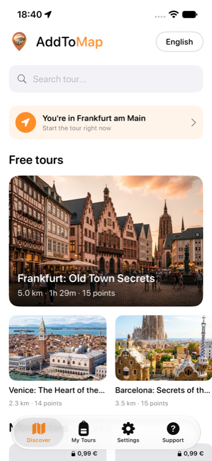

Pick a city, follow the route on the map, and hear its stories as you walk — fully offline. From 0.99 €, no subscription.
🎧Soon on theApp Store
Three full city walks, free right now. More cities on the way.
Fascinating history and local secrets at every stop — curated, not generic.
Download once, walk anywhere — no roaming, no signal needed.
Tours from 0.99 €. No subscription, no account.
No tour group, no schedule. Start, pause and resume whenever.
Browse tours and listen to a free preview.
The whole tour saves to your phone for offline use.
Follow the map; stories play as you reach each stop.